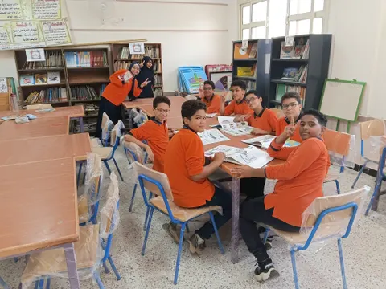
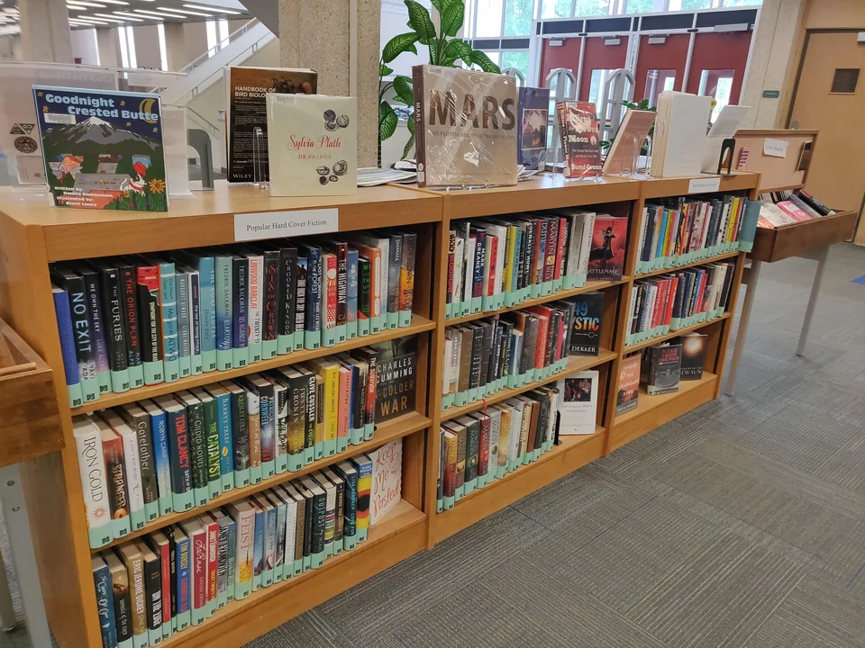
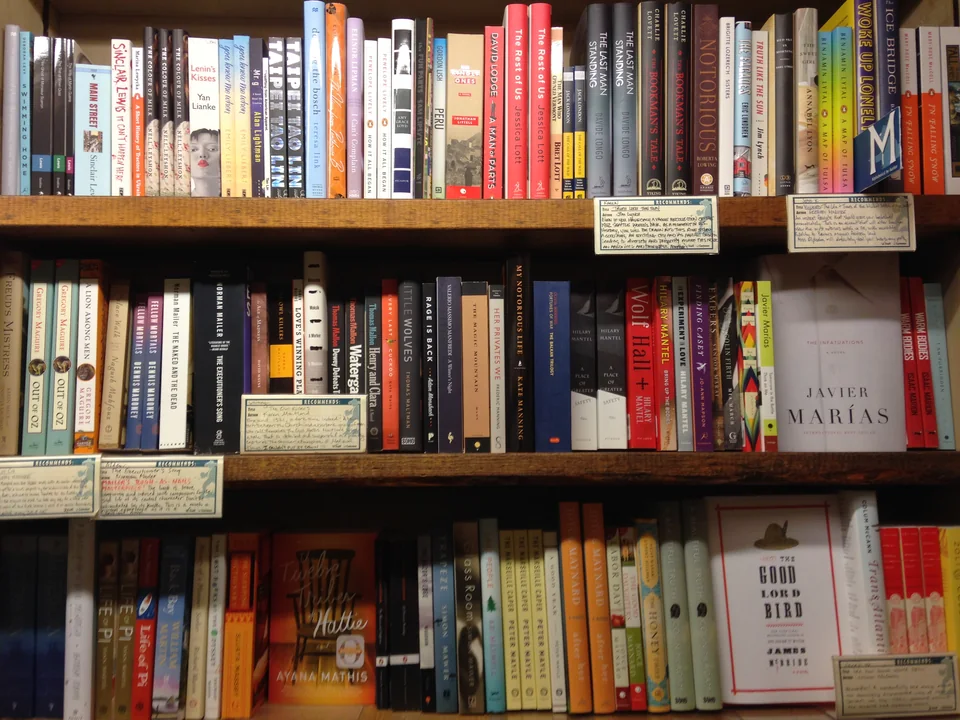
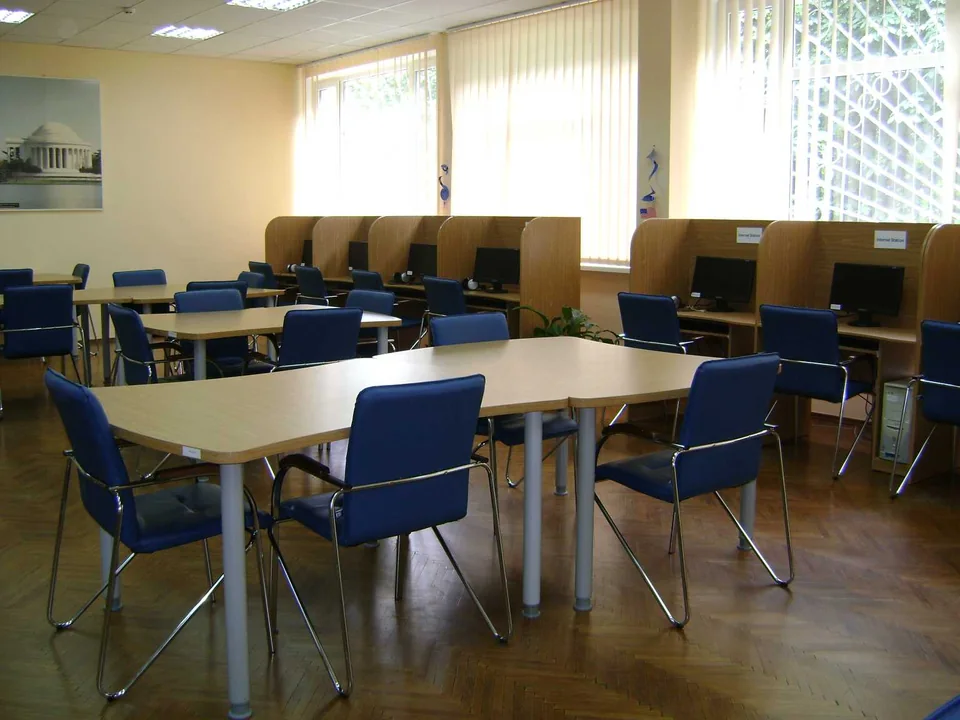

مساعد أمين المكتبة
إجابة فورية عن الموقع والكتب المنشورة. يرسل الأسئلة العامة تلقائيًا إلى Gemini، ولا تُحفظ المحادثة في قاعدة الموقع ولا تصل إلى المدير عبر Telegram. تُحجب البيانات الشخصية محليًا.
افتح مساعد أمين المكتبة



فهرس المكتبة المدرسية الرقمية ومصادر عربية وعالمية، من نقطة بداية واحدة.
اختر نطاق البحث؛ المصادر الخارجية تشمل فهرس الإسكندرية ومكتبة الكونجرس.
إجابة فورية عن الموقع والكتب المنشورة. يرسل الأسئلة العامة تلقائيًا إلى Gemini، ولا تُحفظ المحادثة في قاعدة الموقع ولا تصل إلى المدير عبر Telegram. تُحجب البيانات الشخصية محليًا.
افتح مساعد أمين المكتبةلإرسال سؤال عام ومتابعة رد خاص في الصفحة. يُعالَج السؤال آليًا عبر Gemini وقد يصل نص السؤال والرد إلى مدير الموقع عبر Telegram؛ لذلك لا تكتب بيانات شخصية.
اسأل أمين المكتبةمحادثة مستقلة ترد تلقائيًا عبر Gemini عن المعلومات العامة المنشورة فقط. موقع المكتبة لا يحفظ نصها؛ لا ترسل بيانات تخص طالبًا أو موظفًا أو مستعيرًا.
افتح بوت Telegramأحدث أخبار التعليم والمكتبات، مع تاريخ النشر ورابط المصدر الأصلي لكل خبر.
مسار بسيط للبحث عن كتاب وفهم بياناته قبل زيارة المكتبة.
اكتب عنوان الكتاب أو اسم مؤلفه أو رقمه العام. ويمكنك اختيار مكتبة أو الاقتصار على النسخ المسجلة كمتاحة.
انتقل إلى فهرس الكتبمتاح تعني أن السجل المنشور يذكر نسخة متاحة؛ وغير متاح الآن تعني أنه لا تظهر نسخة متاحة في ذلك السجل. قد تتغير الحالة قبل الزيارة.
راجع بيانات المكتباتقد لا يكون الكتاب مسجلاً أو منشوراً بعد. خلوّ نتائج الفهرس لا يعني خلوّ رفوف المكتبة؛ لا تظهر إلا السجلات التي تنشرها المكتبة.
جرّب بحثاً آخرروابط إلى مواقعها الأصلية؛ ليست نتائج كتب مدمجة في فهرس المكتبة المدرسية الرقمية.
مكتبة عربية غير ربحية تتيح كتباً للقراءة من الموقع الأصلي؛ قد تتطلب بعض المزايا حساباً لدى المصدر.
تصفّح كتب صفحات يفتح في موقع خارجينصوص من الملكية العامة أو برخصة حرة؛ تحقّق من حقوق كل عمل، فهي تختلف بحسب بلد النشر.
افتح ويكي مصدر يفتح في موقع خارجيكتب مجانية كثيرة، معظمها بالإنجليزية ومن الملكية العامة في الولايات المتحدة؛ تحقّق من حقوق العنوان في بلدك.
ابحث في Gutenberg يفتح في موقع خارجيابحث في بيانات مقتنيات المكتبة وفهرسها الإلكتروني؛ وجود سجل لا يعني أن نص الكتاب متاح للقراءة الرقمية.
افتح فهرس الإسكندرية يفتح في موقع خارجيابحث في سجلات الكتب والمجموعات. خدمة البحث وواجهة API العامة لا تحتاجان اشتراكاً سنوياً؛ وتختلف قراءة المواد بحسب السجل والحقوق.
ابحث في كتب مكتبة الكونجرس يفتح في موقع خارجيبوابة موارد تعليمية وبحثية؛ يتطلب الوصول التسجيل وقد يختلف حسب فئة المستخدم والمؤسسة وشروط المنصة. نعرضه كوصلة إرشادية فقط.
افتح بنك المعرفة المصري يفتح في موقع خارجيمكتبة رقمية عربية تعرض الكتب المتاحة للقراءة عبر قارئها وروابط PDF لدى المصدر.
استكشف الكتب واقرأها يفتح في موقع خارجيتتيح المكتبة قراءة الكتب التي انتهت حقوق ملكيتها؛ أما الحقوق السارية فتُقرأ داخل مبنى المكتبة فقط.
ابحث في مستودع DAR يفتح في موقع خارجيمواد أرشيفية مجانية عن تاريخ وثقافة الخليج؛ أرشيف تاريخي لا فهرس كتب مدرسية.
استكشف أرشيف قطر الرقمي يفتح في موقع خارجيابدأ بكتب كاملة مرخّصة للقراءة هنا، ثم انتقل إلى مكتبات رقمية عربية. البحث الفهرسي أدناه اختياري ولا يعرض نص الكتاب بذاته.
كل رابط يفتح الجهة الأصلية؛ تختلف الإتاحة بحسب العنوان والحقوق والتسجيل المطلوب.
اقرأ الكتاب لدى المصدر مباشرةً؛ لا ننسخ ملفه أو نستضيف نسخة منه.
يمكنك البحث في السجلات ثم فتح الكتاب لدى المصدر إذا كان متاحاً بحقوق تسمح بذلك.
في الإسكندرية يفتح البحث في فهرس BALIS الرسمي؛ وفي الكونجرس تُجلب نتائج فهرس الكتب مباشرة من API العامة. لا توجد نتائج تجريبية، ولا نحمّل النصوص المحمية أو نرفع كتباً إلى الموقع.
اكتب عنواناً أو مؤلفاً لبدء البحث المباشر.
المصادر: فهرس مكتبة الإسكندرية وفهرس الكتب في مكتبة الكونجرس. السجلات الخارجية لا تثبت وجود نسخة في المكتبة المدرسية الرقمية.
خلاصات عربية واضحة للأخبار المتحققة، مع رابط كل مصدر أصلي؛ وأسفلها بحث مباشر في بيانات الأوراق والمنشورات التعليمية المفتوحة.
فترة المراجعة المحددة ٢٤ ساعة؛ تُضاف الأخبار الجديدة إلى الأرشيف ولا تُحذف الأخبار السابقة، مع تاريخ كل خبر ورابط مصدره الأصلي.
سيعرض الموجز فقط أخبارًا يمكن التحقق من مصدرها وتاريخها؛ لا يعني ظهور خبر تأييدًا أو شراكة مع الجهة الناشرة.
بيانات بحثية من فهرس عالمي؛ يعرض هذا البحث السجلات التي يصنفها OpenAlex مفتوحة الوصول، مرتبةً بالأحدث.
تُرسل عبارة البحث مباشرة إلى OpenAlex عند البحث، وتُضاف إلى رابط ERIC وتُرسل إليه فقط عند فتحه. لا يحفظ هذا الموقع عبارة البحث؛ وقد تعالج الخدمات الخارجية الطلب وفق سياساتها. العناوين والمؤلفون وسجلات الوصول بيانات خارجية نعرضها كنص فقط.
اكتب موضوعاً لبدء البحث؛ لا تُحمّل نتائج تلقائية أو محفوظة.
مصدر بيانات البحث: توثيق OpenAlex API. وصف «مفتوح الوصول» مأخوذ من سجل OpenAlex؛ قد يفتح الرابط صفحة الناشر أو المستودع، ولا يعني تلقائياً أن النص PDF أو أن الدراسة محكّمة. تحقّق من نوع المنشور والرخصة لدى المصدر الأصلي.
هذا الموضع مخصص للتقارير والأخبار المحلية المعتمدة. لا توجد مواد أصلية منشورة فيه الآن؛ ولن نملأه بأخبار منقولة على أنها حصرية. الإعلانات العامة الحالية متاحة في قسم الإعلانات.
لا تمثل الروابط أو السجلات المعروضة اعتماداً أو شراكةً أو تأييداً من الجهات المذكورة. تُفتح المواد في مواقعها الأصلية وتخضع لسياساتها وحقوقها.
اكتب عنواناً أو اسم مؤلف أو رقماً عاماً، ثم استكشف النتائج المنشورة.
لا يعرض الفهرس العام حالياً عناوين منشورة. لا يعني ذلك عدم وجود كتب بالمكتبات؛ ستظهر السجلات عندما تنشر المكتبة بيانات العنوان والفرع والنسخة.
كيف أستخدم الموقع؟تظهر هنا بيانات المدارس التي أكملها مالكها واختار نشرها، مع الفروع المنشورة إن وُجدت.
معلومات ثابتة للاستخدام العام؛ لا تُعرض هنا إعلانات غير معتمدة.
قد تتغير حالة النسخ المنشورة؛ راجع الفرع ووسيلة التواصل المعتمدة قبل التوجه. لا توجد إعلانات تشغيلية أخرى منشورة في هذا القسم حالياً.
من تسجيل الكتاب برقم عام إلى متابعة الحركة والتقارير، كل خطوة لها مكان واضح.
للموظفين وأمناء المكتباتابحث عبر الفروع عن العنوان أو المؤلف أو رقم الكتاب، واعرف الإتاحة المنشورة.
رقم عام، رقم نسخة، تصنيف، فرع، دولاب ورف؛ لتقليل الالتباس وقت الجرد.
إعارات ومرتجعات، حجوزات داخلية، طلبات بين الفروع، وتصدير جداول الجرد.
دخول مخصص للمستخدمين الذين أضافهم مسؤول المكتبة؛ لا يوجد تسجيل مفتوح.
سيجيب مساعد المكتبة تلقائيًا عن الأسئلة العامة بالاستناد إلى معلومات الموقع والفهرس المنشور. يظهر رد كل سؤال لصاحبه فقط في هذه الصفحة.
فتح بوت الاستفسارات على Telegram ↗تُعالج الأسئلة العامة تلقائيًا عبر Gemini اعتمادًا على معلومات الموقع والفهرس المنشورين. قد يصل نص السؤال والرد الآلي إلى مدير الموقع عبر Telegram، وتُحفظ التذكرة لمتابعة الرد الذي يظهر لصاحبها فقط. إذا اكتشف النظام بيانات تخص طالبًا أو موظفًا أو مستعيرًا أو إعارة فردية، يعتذر محليًا ولا يرسل السؤال إلى Gemini أو Telegram ولا يحفظه في قاعدة الموقع.
لخصوصيتك، لا تكتب أسماء أو أرقامًا أو بريدًا أو بيانات تخص طالبًا أو مستعيرًا أو موظفًا، ولا أي معلومة سرية. اترك علامة التبويب نفسها مفتوحة للاحتفاظ بالرد.